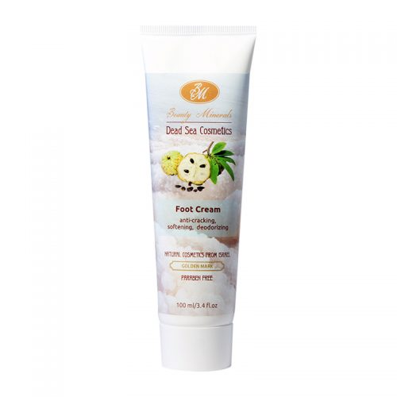

ДЛЯ ТЕЛА
КРЕМ ДЛЯ НОГ
КРЕМ ДЛЯ НОГ ПРОТИВ ТРЕЩИН, СМЯГЧАЮЩИЙ, ДЕЗОДОРИРУЮЩИЙ
Крем, в сбалансированную формулу которого, включены масла макадамии, кокоса, Ши, экстракты каштана, мирта и сапонарии, известные своими уникальными свойствами. В сочетании с минералами Мёртвого моря оказывает благоприятное воздействие на кожу ног, уменьшая сетку кровеносных сосудов, повышает эластичность кожи стоп, а также способствует укреплению ногтей.
Способ применения: Массирующими движениями, до впитывания, нанести на чисто вымытые, влажные ступни ног.
Ingredients: Ingredients. Water, Soya Oil, Eucalyptus Extract, Glyceryl Stearate SE, Cetyl Alcohol, Caprylic/Capric Triglyceride, Glycerin, Rosemary (Rosmarinus officinalis) Extract, Saponaria Officinalis Extract, Caprylic/Capric Triglyceride, Shea Butter, Castor Oil, Mineral Oil, Bees Wax, Coconut Butter, Phenoxyethanol, Carbopol, Silicon Oil, DMDMH, Xantan Gum, Tocopherol, Walnut (Juglans regia) Oil, Tocopherol, Dimethicone, Dead Sea Salt, Fragrance, Menta Piperita (Peppermint) Oil, Cyclomethicone
Объём: 100 мл.